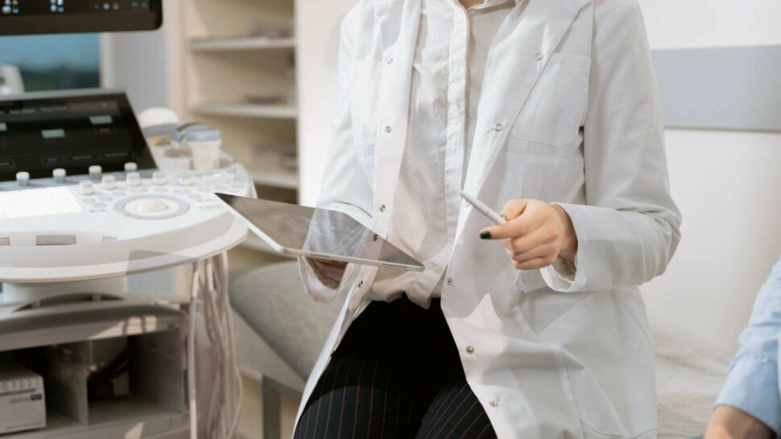
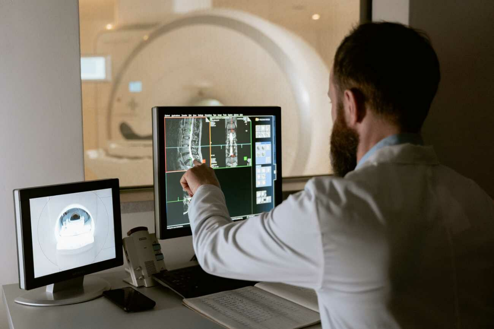

Technologies médicales : innovations technologiques en santé au service de la médecine

Solutions basées sur le cloud computing (informatique en nuage), analyse des données de santé, communication fluide, tenue de dossiers électroniques, prise de rendez-vous en ligne, télémédecine, ou l'Internet des objets médicaux (IoMT), l’innovation technologique et l'avènement d'internet ont permis l’émergence de nouveaux dispositifs médicaux et de nouvelles pratiques médicales offrant des traitements et des services de santé de plus en plus personnalisés. En effet, l'avenir des soins de santé recèle de nombreuses possibilités, et la technologie médicale a un rôle important à jouer pour garantir de meilleures options et mesures afin de résoudre tous les problèmes de santé les plus importants auxquels les patients sont confrontés.
Sans omettre l'importance de privilégier la main-d'œuvre humaine et les emplois dans les domaines de la santé, les innovations technologiques médicales jouent un rôle clef pour aider et soutenir les professionnels de la santé (médecins, infirmières, kinésithérapeutes,...) qui consacrent beaucoup d'heures et de travail physique pour s'occuper des patients - et optimiser les prises en charge.
Effectivement, les nouvelles technologies médicales permettent aux professionnels de la santé de progresser dans leur domaine, de sauver un plus grand nombre de patients et de lutter contre de nouvelles maladies. De plus, les nouvelles technologies médicales peuvent faciliter la réactivité nécessaire face aux enjeux mondiaux et aux nouveaux défis à relever. Bien qu'une partie des innovations ne datent pas d'hier et que d'autres vont voir le jour à l'avenir, rappelons qu'en France, l'Agence du Numérique en Santé (anciennement Agence des systèmes d’information partagés de santé) date de 2009. [1]
D'ailleurs, cette agence gouvernementale française chargée de la santé numérique, qui contribue à l'amélioration du système de santé en France aux côtés de la Délégation ministérielle au numérique en santé, est une réponse au message lancé par l'OMS au début des années 2000. « En 2005, dans sa résolution WHA58.28 sur la cybersanté, l’Assemblée mondiale de la Santé invitait instamment les États Membres à envisager d’élaborer un plan stratégique à long terme pour concevoir et mettre en œuvre des services de cybersanté dans les différents domaines du secteur de la santé [...] à développer des infrastructures pour appliquer à la santé les technologies de l’information et de la communication [...] afin de promouvoir un accès équitable, d’un coût abordable et universel à leurs avantages ». [2]

Sommaire
- Médecine et avancée des nouvelles technologies médicales (télémédecine,...)
- Exemples d'innovations technologiques médicales au service des professionnels et des patients
- "Medtech" : la médecine du futur, c'est maintenant ! - Vidéo
- Avantages et inconvénients des innovations technologiques médicales
- Sources
Médecine et avancée des nouvelles technologies médicales (télémédecine,...)

Des innovations et nouveautés médicales pour un meilleur avenir de la santé ?
E-santé, robot-chirurgien, télémédecine, téléconsultation, App de RDV médicaux,... Un grand nombre de termes actuels indiquent que les innovations numériques sont omniprésentes dans les secteurs de la médecine et révolutionnent les soins de santé. Et il semble évident que la technologie en médecine est là pour s'ancrer durablement et s'installer dans les mœurs.
D'ailleurs, de nombreuses innovations et de nouvelles solutions (Applications mobiles pour les RDV médicaux, visite virtuelle des EHPAD, Dossier Médical Partagé,...) mises en place par des start-up internationales et des gouvernements sont déjà sur le marché, et elles ont toutes considérablement amélioré les soins de santé, bien qu'une inégalité d'accès (à ces outils et ces services) soit encore fortement présente, et mérite de se déployer plus rapidement.
Aussi, comme le soulignait déjà en 2013 l'article « Innovation dans les technologies médicales : pourquoi et comment s’impliquer ? » publié dans la Revue Médicale Suisse, « les technologies médicales font partie intégrante de notre quotidien. Plus qu’un simple utilisateur, le médecin a un rôle capital à jouer dans l’innovation de ces technologies. Par l’évaluation de nouveaux instruments, il peut guider les industriels vers des solutions amenant à un réel impact clinique. De plus, par sa pratique quotidienne, il a la capacité d’identifier les réels besoins non comblés par les technologies actuelles. Cependant, l’innovation et le développement ne font pas partie de la formation médicale actuelle. Afin de combler ce manque, de nouveaux centres de formation en innovation dans les technologies médicales fleurissent en Europe, suivant le succès de centres américains. Ces nouveaux programmes de formation peuvent nous permettre de devenir acteurs et initiateurs des inventions qui changeront notre pratique médicale dès demain ». [3]
À ce jour, de multiples problèmes médicaux tels que l'insuffisance cardiaque, le diabète, ou la dépression, sont étudiés et supposément résolus grâce à de nouvelles technologies remarquables inventées par des start-up du monde entier. En essayant de répondre aux besoins (et aux questions éthiques que posent chaque innovation), ces avancées en e-santé (télémédecine,...) permettent de faciliter la prise en charge de nombreux patients de tous âges notamment dans les déserts médicaux, ainsi que de maximiser les frais médicaux et les coûts de gestion du système de santé.

Exemples d'innovations technologiques médicales au service des professionnels et des patients

Avantages et inconvénients des innovations technologiques médicales
Sources
- Agence du numérique en santé (antérieurement nommée Agence des systèmes d’information partagés de santé ou ASIP-Santé, est une agence gouvernementale française chargée de la santé numérique). https://esante.gouv.fr
- Stratégie mondiale pour la santé numérique 2020-2025. Organisation mondiale de la Santé (OMS). 2021. ISBN 978-92-4-002755-8 (version électronique). ISBN 978-92-4-002756-5 (version imprimée). https://apps.who.int
- Revue Médicale Suisse (revue de formation continue de référence pour les médecins et les spécialistes des diverses disciplines médicales). « Innovation dans les technologies médicales : pourquoi et comment s’impliquer ? ». 2013. https://www.revmed.ch
- La promesse des patients virtuels. 20 décembre 2021. Par Alyssa Ross. https://blogs.3ds.com ; https://ifwe.3ds.com/fr/life-sciences-healthcare
- Top 10 Emerging Technologies of 2020. Scientific American. https://www.scientificamerican.com
- Avatar Medical, récompensée pour sa solution d'imagerie médicale en réalité virtuelle. Institut Curie. 04/04/2022. https://curie.fr/
- Insuffisance cardiaque : mesurer le risque de décès précoce. 2019. https://pasteur-lille.fr
- Big data en santé. Des défis techniques, humains et éthiques à relever. INSERM. 2016. https://www.inserm.fr
- Mon espace santé. Le service public pour gérer sa santé. Vous avez la main sur votre santé. https://www.monespacesante.fr
- Maladie à virus Ebola. Aide-mémoire. OMS. Janvier 2018. https://apps.who.int
- Flambée de maladie à coronavirus 2019 (COVID-19). OMS. https://www.who.int
- Frimousse Soufyane, Peretti Jean-Marie, « Les changements organisationnels induits par la crise de la Covid-19 », Question(s) de management, 2020/3 (n° 29), p. 105-149. DOI : 10.3917/qdm.203.0105. https://www.cairn.info
Ressources
- Les innovations françaises de santé au CES 2022. https://www.rfi.fr
- Procréation : quelles sont les dernières avancées médicales ? https://www.caminteresse.fr
- Jumeau numérique pour soins réels : SimbiotX modélise la santé du futur. https://www.inria.fr/
- Les jumeaux numériques, nouveaux auxiliaires de santé. https://www.sciencesetavenir.fr
- Potential of Internet of Medical Things (IoMT) applications in building a smart healthcare system: A systematic review. Journal of Oral Biology and Craniofacial Research. Volume 12, Issue 2, 2022, Pages 302-318. https://www.sciencedirect.com
- WHA58.28. Cybersanté. La Cinquante-Huitième Assemblée mondiale de la Santé. http://apps.who.int
- Starcevic V, Berle D, Arnáez S. Recent Insights Into Cyberchondria. Curr Psychiatry Rep. 2020;22(11):56. Published 2020 Aug 27. doi:10.1007/s11920-020-01179-8. https://www.ncbi.nlm.nih.gov
- Santé et produits pharmaceutiques. Technologie médicale. Statistiques et études populaires. https://fr.statista.com
- Tableaux de l'Économie Française. Édition 2015. Personnels et équipements de santé. Insee. https://www.insee.fr
- Panorama de la santé 2019. Les indicateurs de l'OCDE. Technologies médicales. https://www.oecd-ilibrary.org
- Promouvoir l'accès aux technologies médicales et l'innovation: Intersections entre la santé publique, la propriété intellectuelle et le commerce (deuxième édition). https://www.wto.org